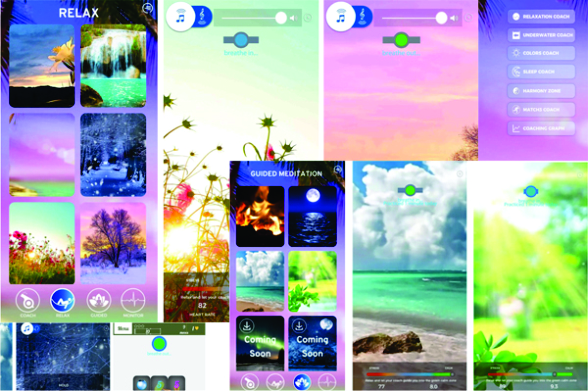
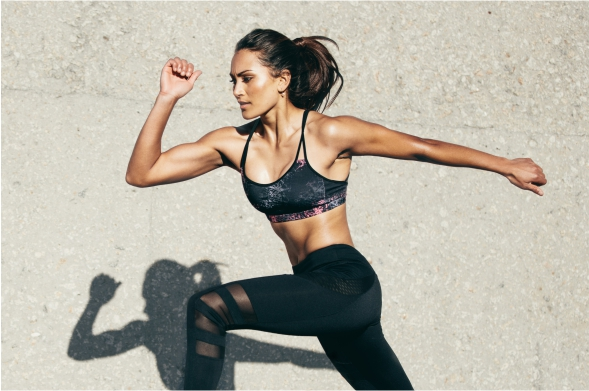
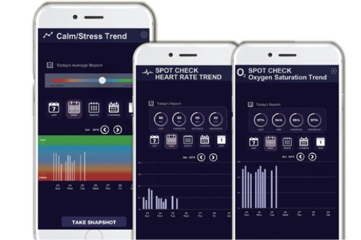

iFeelWell


ifeelwell is a personal biofeedback device to measure a biological signal and then using the live information (Heart Rate, Heart Rate Variability, Breathing rate, Oxygen Saturation) to guide a reaction or response. It is accompanied with advanced software, an easy to use app that will guide the user to a state of calmness. This technology measures the activity in the sympathetic and parasympathetic nervous system by taking continuous readings via the fingertip sensor.
The app along with the device will give different program options to follow with a breathing pacer, personal breathing suggestions to achieve calmness by adapting the right pattern of breathing, and one can progress by playing the games that are available on the app which is a simulation of a pressure situation. The challenge for the user is to maintain a state of calmness while playing the game. If their level of calmness dips below a certain point, the screen will fade away and the user will not be able to continue with the game until they focus on their breathing and consciously return to a calmer state of mind.
The real time feedback provided by the app keeps the user in a better state of focus and performance by utilizing only their body’s natural response to the environment and daily challenges. Along with training programs, the app also provides a summary report of the user’s performance during the training session, at the end as well as a record of their past readings and performance. Once the device is purchased, you can find the ifeelwell app on the play store.
We provide a 20 minute call to explain the app and design a program based on client needs.

Our app synchronizes with your physiology, using real-time vitals obtained by the heart rate sensor, to guide you to breathe at your Resonance Frequency Breathing rate. Our technology measures the activity in your sympathetic and parasympathetic nervous system by taking continuous readings via the fingertip sensor. We then train you to decrease the activity of the sympathetic nervous system (STRESS) and increase the activity in the parasympathetic nervous system. (CALM). The sensor and app work as your personal coach that uses breath pacers that guide you to lengthen your exhalation to calm your heart and mind and increase your resilience to stress.
Calming videos with relaxing sounds and breath pacers guide you to breathe at your Personal Best Relaxation Breathing Rate to help you fall asleep. This includes breathing exercises and guided meditations specifically aimed at activating the parasympathetic nervous system and improving sleep.
The iFeelWell app comes with guided meditation of various themes such as Progressive Muscle Relaxation which is based on the simple practice of tensing, or tightening, one muscle group at a time followed by a relaxation phase with release of the tension. This relieves chronic pain and muscle tension as well as related psychological issues like stress, anxiety and insomnia.

Using real-time vitals obtained by the heart rate sensor, the iFeelWell app guides you to breathe at your Resonance Frequency Breathing rate. Resonance Frequency Breathing is used by professional and Olympic athletes to increase focus and improve performance as well as individuals in highly stressful professions such as high-performance military pilots, law enforcement personnel, and actors and singers to cope with stage fright. It has also shown to improve scores during test taking.

Our High-Tech Bluetooth Oximeter pairs with the FREE iFeelWell app to measure stress/calm levels and guide you to breathe at your Personal Best Relaxation Breathing Rate with advanced pulse oximetry and cutting edge technology.
Easily View Stress, Oxygen and Heart Rate Trends by day, week, month or year.
The iFeelWell app is compatible with Apple phones iOS 12.0 or higher and Android phones 5.0 or
higher.
Note: You will need at least 500mb of free disk space for app to run smoothly.
This unit is rechargeable via USB. The battery can support 2 hours of continuous use or approximately
The fingertip sensor transmits vital readings to the iFeelWell app. Using these readings, iFeelWell will personalize breathing exercises to help you achieve optimum relaxation with guided meditation and breath pacers.
Learn to breathe at your best relaxation breathing rate to improve your body's natural response to stress. Proper breathing can reduce stress, anxiety, muscle tension and improve sleep 400 measurements.